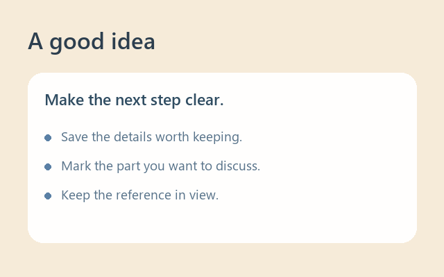
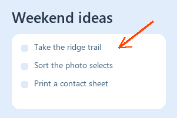
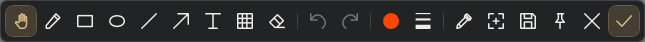

F1Capture
Take the screenshot.
Select an area, add markup, then press Enter to copy it and add it to the shelf. Captures made with Win+Shift+S can also be collected automatically.
BY 分辨率网络 · WINDOWS SCREENSHOT TOOL
Keep your latest screenshots on a line at the top of your screen. Copy them in a click, mark up the details, or pin them right where you need them.

The demo uses sample images. Click the Snapline icon in the system tray to show or hide the shelf.

Enable JavaScript to try the interactive demo.
Find the screenshot you just took and get right back to work.
Move your pointer to the top of the screen or press Ctrl+Alt+T to open the shelf. Click to copy, double-click to preview, or scroll through recent shots.
Zoom, rotate, and annotate in the same window. Saving updates the app's copy and preserves the original file.
Press F1, drag to select an area, or choose a detected control. Open the color picker to copy HEX or RGB values from the selection.


Press F3 to pin an image, text, or a color from the clipboard. Drag to move it, scroll to resize it, or hold Ctrl while scrolling to change opacity.
Pins last for the current session. Save as PNG to keep a copy.
From your first capture,
these are the actions you'll come back to.
Select an area, add markup, then press Enter to copy it and add it to the shelf. Captures made with Win+Shift+S can also be collected automatically.
Pin the clipboard contents to your desktop while you work. Press Shift+F3 to show or hide all pins together.
Open the shelf, click a thumbnail, and paste it into your work. You can also drag it to a folder or an app that accepts file drops.
These are the default shortcuts. Change the capture and pin shortcuts from the system tray if they conflict with another app.
Snapline pays attention to the little things so you can stay with your work.
Reveal the shelf by hovering at the top or keep it open. In full-screen apps, it stays tucked away.
Snapline works offline and requires no account. Automatic clipboard collection reads images only. Clipboard and folder collection can be disabled separately.
Annotations and deletions apply to the app's copy of imported images. Export as PNG whenever you want a permanent copy.
What to know before you get started.
Snapline runs on Windows 10 or 11 x64 with .NET Framework 4.8 or later. The installer requires no administrator rights. With the portable version, unzip the archive and run Snapline.exe.
Image copies and settings are stored in %LOCALAPPDATA%\Snapline. Open the collection folder from the system tray. The shelf shows the latest 60 items. Older copies stay in the inbox folder.
Automatic collection reads newly copied images only. Snapline reads the current clipboard image, text, or color when you choose Pin to desktop.
Pins last for the current session. Press Ctrl+S on a pin to save it as a PNG. Image copies saved to the shelf stay on your PC.
The app and installer are unsigned, so Windows may show an unknown publisher or SmartScreen prompt. Download from the GitHub release linked on this page and check the SHA-256 checksum supplied with that release.
This page demos some features from the development version. Check the release notes before downloading, or build the development version from source.

Snapline for Windows, by 分辨率网络.